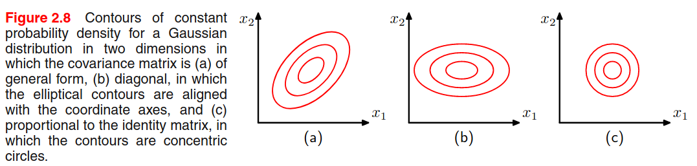
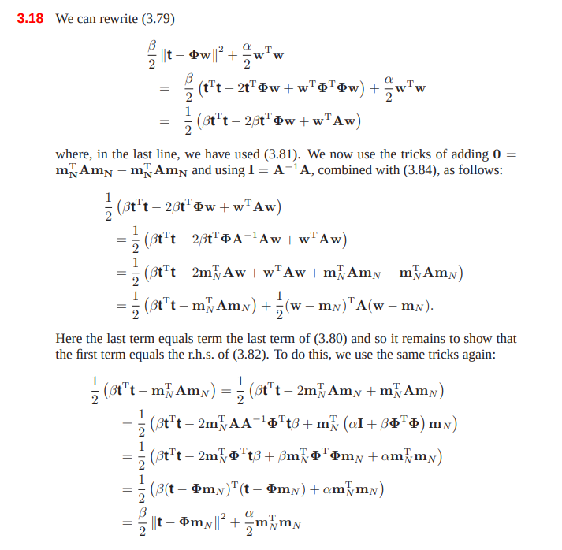
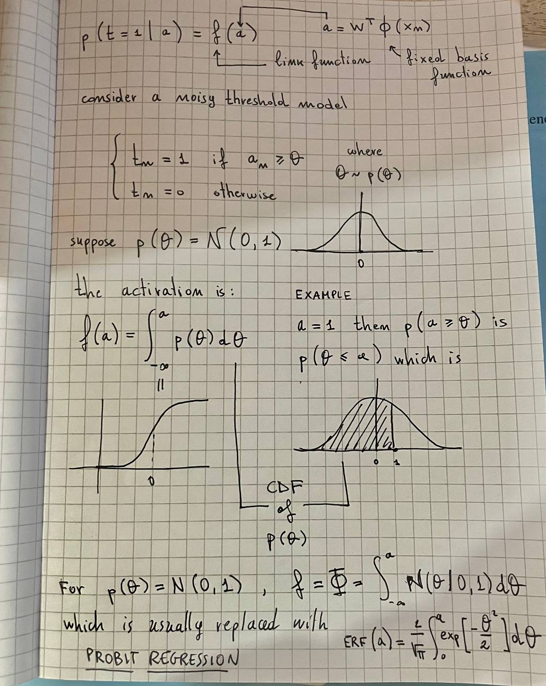

Introduction
This chapter cover the basics concepts. Only hot takes and notes on slightly more complex concepts will be reported.
Polynomial Curve Fitting Example
Hot takes from the "Polynomial Curve Fitting" example:
- The squared error loss function is squared with respect to the polynomial weights. This means that its derivative is linear with respect to the polynomial weights and can be solved in a closed form. By finding a unique solution that minimizes the loss, we can determine the optimal polynomial curve fit.
- A higher degree \(M\) corresponds to increased flexibility in the polynomial, but it also makes the model more susceptible to overfitting. Overfitting occurs when the model captures noise or random fluctuations in the training data, leading to poor generalization to new data.
- To mitigate overfitting, regularization can be employed. Regularization limits the magnitude of the parameters by incorporating a penalty term in the loss function. When the penalty term is quadratic, the regression is known as ridge regression.
- The \(\lambda\) term in the regularization controls the complexity of the model. A higher \(\lambda\) value results in a more constrained model with reduced flexibility, helping to prevent overfitting.
- Another approach to reducing overfitting is by increasing the size of the training set. By including more diverse examples in the training data, the model can learn more general patterns and avoid over-relying on specific instances.
Probability theory
In page 18, on the paragraph about probability densities, author states that under a non-linear change of variable \(g\), a probability density transforms differently from a simple function, due to the Jacobian factor. To understand it better, let's report the answer provided in math.stackexchange.com.
Conceptually the idea is the following: if \(f\) is a probability density function, it satisfies certain properties, like \(f \ge 0\) and
\[ \int_{-\infty}^{\infty} f(x)dx = 1 \]
If we look at a transformation \(f(g(y))\), firstly the second property might be not true anymore. Hence, \(f(g(\cdot))\) is likely no probability density function. Secondly, what we roughly try to describe with \(f(g(\cdot))\) is the probability distribution of a random variable \(Y\) that is given such that \(g(Y)\) follows the distribution represented by \(f\). Say \(g\) is invertible and sufficiently smooth. The distribution of \(Y\) is given by
\[ P(Y \in A) = P(g(Y) \in g(A)) = \int_{g(A)} f(x)dx \]
Which is not very useful in practice, as this integral is on sets of the form \(g(A)\). According to the integration by substitution formula, we can compute a probability density function ℎ such that
\[ P(Y \in A) = \int_A h(y)dy \]
Here,
\[ h = f(g(\cdot)) \det J_g(\cdot) \]
where \(J_g\) is the Jacobian of \(g\).
A consequence of this observation is that the maximum of a probability density is dependent on the choice of variable.
Bayesian curve fitting
Let's revise the polynomial curve fitting example to also estimate uncertainty. We suppose that each prediction is normally distributed with the mean centered at the prediction, and the variance \(\beta^{-1}\) estimated along with the polynomial weights \(\bar w\): \[ p(t \mid x, \bar w, \beta) = \mathcal N (t \mid y(x, \bar w), \beta^{-1}) \] Supposing that the \(N\) points from the dataset \(\langle X, T \rangle\) are drawn independently, the likelihood function of a prediction is given by: \[ p(T \mid X, \bar w, \beta) = \prod_{n=1}^N \mathcal N (t_n \mid y(x_n, \bar w), \beta^{-1}) \] It is simpler and numerically convenient to work with the log-likelihood: \[ \ln p(T \mid X, \bar w, \beta) = -\frac{\beta}2 \sum_{n=1}^N (y(x_n, \bar w) - t_n)^2 + \frac{N}2\ln \beta - \frac{N}2\ln(2\pi) \] We should find \((\bar w, \beta)\) (\(\beta\) is the precision, inverse of variance) which maximize the likelihood. If we consider first the parameters \(\bar w\), then the maximization problem can drop the last 2 terms since they do not depend on \(\bar w\), which is the same as minimizing the sum of squares error loss.
Once found \(\bar w_{ML}\), we can find \(\beta\) as \[ \frac{1}{\beta_{ML}} = \frac1N \sum_{n=1}^N (y(x_n, \bar w) - t_n)^2 \] By using \(\bar w\) and \(\beta\), instead of providing a single prediction, we can provide a full distribution \(p(t \mid x, \bar w_{ML}, \beta_{ML})\) over the values of \(t\) for each \(x\).
Let \(p(\bar w \mid \alpha)\) be the prior distribution over the weights \(\bar w\), for simplicity: \[ p(\bar w \mid \alpha) = \mathcal N(\bar w \mid \bar 0, \alpha^{-1} I) \] Where the hyperparameter \(\alpha\) is the precision of the distribution. Using the Bayes theorem, the posterior distribution \(p(\bar w \mid X, T, \alpha, \beta)\) is proportional to the product of the likelihood and the prior: \[ p(\bar w \mid X, T, \alpha, \beta) \propto p(T \mid X, \bar w, \beta) p(\bar w \mid \alpha) \] By now we can find the most probable weights \(\bar w\) by maximizing the posterior distribution. This approach is called MAP (MAximum Posterior). We find that maximizing the posterior defined previously is the same as minimizing \[ \frac{\beta}{2}\sum_{n=1}^N (y(x_n, \bar w) - t_n)^2 + \frac\alpha2\bar w^T \bar w \] So maximizing the posterior is the same as minimizing the regularized sum of squares error loss function, where the regularization parameter is \(\lambda = \frac\alpha\beta\).
For a fully Bayesian treatment, we should evaluate \(p(t \mid x, X, T)\). This requires to integrate over all the possible \(\bar w\). By using the product and sum rules, we can write: \[ p(t \mid x, X, T) = \int p(t \mid x, \bar w, \beta) p(\bar w \mid X, T, \alpha, \beta) d\bar w \] Which can be solved analytically, finding that: \[ p(t \mid x, X, T) = \mathcal N (t \mid m(x), s^2(x)) \] where \[ m(x) = \beta \phi(x)^T S \sum_{n=1}^N \phi(x_n) t_n \] and \[ s^2(x) = \beta^{-1} + \phi(x)^T S \phi(x) \] and \[ S^{-1} = \alpha I + \beta \sum_{n=1}^N \phi(x_n) \phi(x_n)^T \] where \(\phi(x) = \langle 1, x, x^2, \dots, x^M\rangle\).
Decision theory
Probability theory is useful to quantify uncertainty, while decision theory allows to make optimal decisions in situations involving uncertainty.
Medical diagnosis example
Consider a medical diagnosis problem in which we have taken an X-ray image of a patient. Our algorithm has to predict if the patient has cancer or not. The input vector is the set of pixel intensities, while the output variable is binary ( no cancer, cancer).
The general inference problem involves determining the joint distribution . Given it, we then must decide to give treatments to the patient or not, and we would like this choice to be optimal. This is called the decision step.
If our goal is to make as few misclassifications as possible, then it is sufficient to study the posterior probability . Assigning each observation to a class means dividing the input space in different decision regions () where the boundaries are called decision boundaries / surfaces. Regions are not constrained to be contiguous but can be comprised of different disjoint sub-regions.
Given our decision regions, the probability of making a mistake is quantified by: \[ \begin{split} p(\text{mistake}) &= p(\bar x \in R_1, C_2) + p(\bar x \in R_2, C_1) \\ &= \int_{R_1} p(\bar x, C_2) d\bar x + \int_{R_2} p(\bar x, C_1) d \bar x \\ &= \int_{R_1} p(C_2 \mid \bar x)p(\bar x) d\bar x + \int_{R_2} p(C_1\mid \bar x)p(\bar x) d \bar x \end{split} \] Since the prior is common in both terms, we can say that the minimum probability of making a mistake is given if each observation is assigned to the class for which the posterior probability is the largest.
For the case of classes, is easier to maximize the probability of being correct: The maximum probability is obtained when each observation is assigned to the class with highest posterior.
Minimizing the expected loss
In our example, we have two different misclassification:
- A healthy patient being classified as having cancer (which is bad)
- A patient with cancer being classified as healthy (which is worse due to late treatments)
We can formalize the severity of each misclassification by constructing a loss function (or cost function) which is a single measure of loss incurred in taking any of the available decisions or actions. Let's construct a loss matrix : Where indicates the loss severity of classifying an observation of class with class . The diagonal indicates correct classifications, is the loss of classifying a patient with cancer () to be healthy (), vice versa for .
The optimal solution is the one which minimizes the average loss function: Our goal is to choose the regions to minimize the expected loss, which can be formulated with priors instead of the joint probability. Again, the decision rule which minimize the loss is the one that assigns each observation to the class with highest posterior.
If the posterior is too low or comparable with the other posteriors, our classification has higher uncertainty of being true. We can use a threshold such that if then we avoid making a decision. This is known as the reject option.
Inference and decision
The classification is now broken in two stages:
- Inference stage, where we learn the model
- Decision stage, where we use posteriors to make optimal assignments
We can identify also 3 approaches to solve the decision stage:
- Generative models. Model the joint distribution , obtain posteriors, make decisions based on posteriors. The joint distribution is useful to simulate samples from the modeled population and for outliers / novelty detection.
- Discriminative models. Determine only the posterior class probabilities and assign each observation to the class with highest posterior accordingly.
- Discriminative functions. Model a function directly, where probabilities play no role.
The benefits of computing the posterior probabilities (avoiding approach n.3) are:
- We can modify the loss matrix without re-training the model (minimizing risk)
- We can use the reject option
- When balancing the dataset, we can compensate for class priors (A)
- We can combine models (B)
(A) Suppose we have 1000 samples from class and 100 samples from class , so the real priors are and . Suppose we want to balance our datasets to 100 samples for each class. We know the real priors and hence we can replace them when using the Bayes theorem.
(B) Suppose we have X-ray data and blood test data , we can develop two models (one for each) and assume that the distributions of the inputs are independent given the class (conditional independence) The posterior is then Hence the combination of 2+ models is trivial.
Loss functions for regression
The decision stage for regression problems consists of choosing a specific estimate of the value for each input . In doing so, we incur a loss . The expected loss is then given by:
A common choice of loss is the squared loss
Supposing that is a flexible function, this can be solved by using the calculus of variations, obtaining the following regression function
Notes on Information theory section
KL divergence and Jensen Inequality
Let and be the exact and an approximate distributions of the random variable . The KL divergence defines the additional amount of information (in nats for bits for ) required to transmit assuming its distribution is (approximated) instead of (exact). The mathematical definition is:
From the Jensen Inequality, we know that for a convex function
Since is a strictly convex function, we can apply the Jensen Inequality to the KL divergence:
Since the function is strictly convex, the equality holds if and only if for all values of .
Minimizing KL = Maximizing likelihood
Suppose we want to approximate an unknown distribution using a parametric distribution . Suppose we have training points drawn from the distribution , we can approximate the KL divergence as:
To find the best values of to approximate , we can minimize the approximated KL divergence:
Therefore, minimizing the KL divergence is the same as maximizing the likelihood.
Mutual information
Let be two random variables. We don't know if they are indipendent or not, but if they are then
To check if they are indipendent we can calculate the KL divergence between and . Given the properties of the KL divergence, if then . This quantity is called mutual information between the variables
It is related to the conditional entropy through:
The mutual information represents the reduction in uncertainty about as a consequence of the new observation (or vice versa).
Chapter 1 Exercises
Solution to exercise 1.1
Given
\[ E(\bar w) = \frac12 \sum_{n=1}^N \left( x_n^M w_M + \dots + x_n w_1 + w_0 - t_n \right)^2 \]
Compute the partial derivative
\[ \frac{\partial E}{\partial w_i} = \sum_{n=1}^N x_n^i \left( x_n^M w_M + \dots + x_n w_1 + w_0 - t_n \right) \]
Set the partial derivatives to zero to get that minimizes \(E\)
\[ \frac{\partial E}{\partial w_i} = \sum_{n=1}^N x_n^i \left( x_n^M w_M + \dots + x_n w_1 + w_0 - t_n \right) = 0 \]
\[ = \sum_{n=1}^N x_n^{M+i} w_M + \dots + x_n^{1+i} w_1 + x_n^{0 + i}w_0 - x_n^{i} t_n = 0 \]
\[ = \sum_{n=1}^N x_n^{M+i} w_M + \dots + x_n^{1+i} w_1 + x_n^{0 + i}w_0 = \sum_{n=1}^N x_n^{i} t_n \]
\[ = w_M \sum_{n=1}^N x_n^{M+i} + \dots + w_j \sum_{n=1}^N x_n^{j+i} + \dots + w_0 \sum_{n=1}^N x_n^{0 + i} = \sum_{n=1}^N x_n^{i} t_n \]
\[ = A_{iM} w_M + \dots + A_{ij} w_j + \dots + A_{i0} w_0 = T_i \]
\[ = \sum_{j=1}^M A_{ij}w_j = T_i \]
Solution to exercise 1.2
Given
\[ E(\bar w) = \frac12 \sum_{n=1}^N \left( x_n^M w_M + \dots + x_n w_1 + w_0 - t_n \right)^2 + \frac\lambda2 || \bar w ||^2 \]
Compute the partial derivative
\[ \frac{\partial E}{\partial w_i} = \left[ \sum_{n=1}^N x_n^i \left( x_n^M w_M + \dots + x_n w_1 + w_0 - t_n \right) \right] + \lambda w_i \]
Set the partial derivatives to zero to get that minimizes \(E\)
\[ \frac{\partial E}{\partial w_i} = \sum_{n=1}^N x_n^i \left( x_n^M w_M + \dots + x_n w_1 + w_0 - t_n \right) + \lambda w_i = 0 \]
\[ = \sum_{n=1}^N x_n^{M+i} w_M + \dots + x_n^{1+i} w_1 + x_n^{0 + i}w_0 - x_n^{i} t_n + \lambda w_i = 0 \]
\[ = \sum_{n=1}^N x_n^{M+i} w_M + \dots + x_n^{1+i} w_1 + x_n^{0 + i}w_0 + \lambda w_i = \sum_{n=1}^N x_n^{i} t_n \]
\[ = w_M \sum_{n=1}^N x_n^{M+i} + \dots + w_i (\lambda + \sum_{n=1}^N x_n^{2i}) + \dots + w_0 \sum_{n=1}^N x_n^{0 + i} = \sum_{n=1}^N x_n^{i} t_n \]
\[ = \hat A_{iM} w_M + \dots + \hat A_{ij} w_j + \dots + \hat A_{i0} w_0 = T_i \]
\[ = \sum_{j=1}^M \hat A_{ij}w_j = T_i \]
where
\[ \hat A_{ij} = \begin{cases} \lambda + \sum_{n=1}^N x_n^{2i} & \text{if } i = j \\ \sum_{n=1}^N x_n^{j+i} & \text{otherwise} \end{cases} \]
or simply
\[ \hat A = \lambda I_M + A \]
Solution to exercise 1.3
The probability of selecting an apple is
\[ \begin{split} P(a) &= P(a, r) + P(a, b) + P(a, g) \\ &= P(a \mid r)P(r) + P(a \mid b)P(b) + P(a \mid g)P(g) \\ &= 3/10 \times 0.2 + \frac12 \times 0.2 + 3/10 \times 0.6 = 0.34 \end{split} \]
Following the Bayes theorem, the probability of the selected box being green given that the selected fruit is an orange is
\[ P(g \mid o) = \frac{P(o \mid g) P(g)}{P(o)} = \frac{0.3 \times 0.6}{0.36} = 0.5 \]
where
\[ \begin{split} P(o) &= P(o, r) + P(o, b) + P(o, g) \\ &= P(o \mid r)P(r) + P(o \mid b)P(b) + P(o \mid g)P(g) \\ &= 4/10 \times 0.2 + \frac12 \times 0.2 + 3/10 \times 0.6 = 0.36 \end{split} \]
Solution to exercise 1.4
Revised solution from Bishop's solution manual.
Let be a non-linear change of variable , for probability density functions we know that Let be the maximum of densities respectively. Let and re-write: Differentiate both sides: Suppose that , then Where:
- cannot be zero
- is the maximum probability, thus cannot be zero
This means has to be 0, which depends on , hence the relation may not hold. If is linear, then the second derivative of is 0 and the relation is valid.
Solution to exercise 1.5
Solution to exercise 1.6
From 1.41
But if x and y are indipendent, then
Therefore .
Solution to exercise 1.32
Let and let be a linear change of variable. In that case, the jacobian factor is the determinant and we can write
So we can write
(last steps: solve the integral on the left-hand side using the substitution remembering that A is non-singular)
Probability distributions
This chapter will focus on the problem of density estimation, which consists in finding / estimating the probability distribution from independent and identically distributed datapoints drawn from . There are two main ways of doing that: the first way is to use parametric density estimation, where you choose one known parametric distribution (e.g., Gaussian) and try to get the right parameters that fit the data. This method assumes that the parametric distribution we use it's suitable for the data, which is not always the case. Another way of doing that is using non-parametric density estimation techniques (e.g., histograms, nn, kernels).
Bernoulli experiment
Suppose we have a data set of i.i.d. observed values of . We can estimate the parameter from the sample in a frequentist way, by maximizing the likelihood (or the log-likelihood):
To find , let's set the log-likelihood derivative w.r.t. to 0:
Since then:
is estimated from the sample mean. In this case, the sample mean is an example of sufficient statistic for the model, i.e. calculating other statistics from the sample will not add more information than that.
Binomial distribution
Sticking with the coin flips example, the binomial distribution models the probability of obtaining heads out of total coin flips:
Where represents all the possible ways of obtaining heads out of coin flips. The mean and variance of a binomial variabile can be estimated by knowning that for i.i.d events the mean of the sum is the sum of the mean, and the variance of the sum is the sum of the variances. Because then:
Beta distribution
Please read the estimating_parameters_using_a_bayesian_approach notebook. Some quick notes here:
and
Multinomial variables
It's a generalization of the Bernoulli distribution where a random variable has possible values instead of being binary. We can represent the variable as a -dimensional binary vector where only one component can be asserted:
The probability of each component to be asserted is regulated by a probability vector , so that basically . Since the vector represents a probability distribution, then:
The multinomial distribution of is given by:
And the expected values is . Let's consider a dataset of N independente observations, then the likelihood function is:
where .
If we want to find from by maximizing the (log) likelihood, we have to constrain that to be a probability distribution and therefore we can use the Lagrangian multiplier
Setting the derivative w.r.t. to zero we get . We can solve for the Lagrangian multiplier by replacing this result in the equation and then we get that and .
We can also consider the distribution of the quantities (Multinomial distribution) conditioned on the parameter and on the number of observations:
where
Short description of Lagrangian Multiplier utility taken from Quora: You are trying to maximize or minimize some function (distance to treasure), while keeping some other function fixed at a certain value (stay on the path). At this point, the gradient (the compass needle) must be parallel to the gradient (the arrows on the signs), but the two vectors will not generally have the same length. The test for whether or not they’re parallel is , where is whatever multiplier is needed to have them match; it will still only be able to be equal if they’re parallel (you can resize the compass needle however you want to make it match the sign arrow, but you have to be at a spot with the right direction).
Dirichlet distribution
While the beta distribution is a prior of the Bernoulli parameter , the Dirichlet distribution is a prior of the Multinomial probability vector . The definition is:
Where . Since the parameters are bounded to , then the distribution is confined to a simplex in the space.
By multiplying the likelihood function (which is the multinomial distribution) by the prior (which is a Dirichlet distribution) we get something that is proportional to the posterior . Assuming a conjugate prior, the posterior has the same form and hence we can derive the normalization constant by comparison with the dirichlet distribution definition. The posterior is defined as:
Gaussian distribution
Univariate Gaussian distribution:
Where and are the mean and variance of the population.
Multivariate Gaussian distribution:
Where is the dimensionality of , is the mean vector and is the covariance matrix.
Central Limit Theorem. Subject to certain mild conditions, the sum of a set of random variables, which is of course itself a random variable, has a distribution that becomes increasingly Gaussian as the number of terms in the sum increases.
Observation n.1 - The covariance matrix is always positive semi-definite. This means that the eigenvalues are non-negative.
Observation n.2 - To be well-defined, a Gaussian must have a positive definite covariance matrix, which means that all the eigenvalues are strictly positive. If the covariance matrix has one or more null eigenvalues (positive semi-definite), then the distribution is singular and is confined to a subspace of lower dimensionality.
Observation n.3 - Given a 2D Gaussian distribution, we find that elements with constant density are distributed as ellipses, where the axis of the ellipse is given by the eigenvectors, and the length of the axis is proportional to the square root of the corresponding eigenvalue. The ellipse defined by the axis having a length equal to the square root of the eigenvalues, we find all the elements with a density of .
This is a hint on my preferred interpretation of eigenvectors and eigenvalues calculated from data: eigenvectors represent that capture most of the variability, and the corresponding eigenvalues are an indicator of the variability on that axis (see PCA).

Observation n.4 - A multivariate Gaussian can be decomposed as a product of multiple univariate Gaussians.
Observation n.5 - The book provides a formal proof to find that and .
Observation n.6 - A general symmetric covariance matrix has independent parameters, and there are another independent parameters in , giving parameters in total. This means that the number of parameters grows quadratically with the dimension .
One way to reduce the number of parameters is to use restricted forms of the covariance matrix. For example, with a diagonal covariance matrix (figure b) we a linear dependency between parameters and dimensionality, but we explain the variability only from the features axis. Another possibility is to use the isotropic covariance (Figure c) where we have only one parameter, but we discard the variability along multiple axis. We have a trade-off between model complexity and flexibility that must be adressed based on the application.

Limitations of the Gaussian - Gaussian is unimodal (only 1 maximum) and thus is not good at representing multimodal data.
Conditional & Marginal Gaussian Distributions
Given a joint Gaussian distribution with (precision matrix) and
where and .
Then we have that the conditional distribution is
Note that is a linear function of .
where
And that the marginal distribution :
All the derivations focus on the quadratic relationship of the exponential factor to the and are detailed starting from page 85. The point is that the conditional and marginal distribution of a joint Gaussian distribution are again Gaussian distributions.
Given a marginal Gaussian distribution for and and a conditional Gaussian distribution for given in the form:
Where expresses the fact that the mean of the conditional distribution given is a linear function of , and is another precision matrix. The marginal distribution of and the conditional distribution of given are given by:
where
Maximum likelihood for the Gaussian
Let be a dataset of observation drawn independently from a multivariate Gaussian distribution. We can estimate the parameters by maximizing the log-likelihood:
By setting the derivative to zero, we can compute:
Where we calculate the two parameters in sequential steps since there's no dependency on when maximizing with respect to . By taking the expectation we see that:
We see that is a biased estimator, and we can correct it by:
Now is a correct extimator for the true covariance.
Student's t distribution
In order to estimate the precision of a Gaussian distribution by using a Bayesian approach, we can use the Gamma distribution as a prior: Then we can marginalize to obtain By performing a number of steps, we can say that this is a Student's t distribution: Where (precison) and (degrees of freedom). The precision of the t distribution doesn't correspond to the inverse of the variance!
The parameters can be estimated by Expectation-Maximization, and the result has the property of robustness: outliers does not severely affect the distribution.
The multivariate version of the t distribution is: and The statistics are
Exponential family
A distribution that is part of the exponential family can be represented as:
Where are the natural parameters of the distribution. The function ensures that the distribution is normalized:
The Bernoulli (), Multinomial () and Gaussian distributions are part of this family, and the PRML book proofs this at page 113.
If we want to estimate , we can do that by maximum-likelihood. Let's set the gradient of w.r.t. to 0:
(a) To understand the underlined expression, remember that the integration is w.r.t. , while the differentiation is w.r.t. , so we directly differentiate the content as the derivative of sums is the sum of derivatives.
(b) recall that , this means that
Point (c) is provided by the identity (chain rule).
We will use this result later on. Now suppose to have i.i.d. observations drawn from the exponential distribution . The likelihood function is given by:
Setting we get:
which can be solved to obtain . The solution depends on the data only through , which is called the sufficient statistic of the exponential distribution. For then ,
For each exponential distribution of the previous form, there exists a conjugate prior distribution over the parameters of the following form
Where is a normalization coefficient, is the same function presented in the exponential distribution, can be interpreted as a effective number of pseudo-observations in the prior, each of which has a value for the sufficient statistic given by .
Again - why do we need conjugate priors??
A prior which is conjugate to the likelihood produce a posterior that has the same functional form as the choosen prior. This allows to derive a closed-form expression for the posterior distribution (otherwise you need to compute the normalization coefficient by integration, YOU DON'T WANT TO DO THAT, RIGHT?)
Noninformative prior
If we have no prior information, we want a prior with minimal influence on the inference. We call such a prior a noninformative prior. The Bayes/Laplace postulate, stated about 200 years ago says the following:
The principle of insufficient reason. When nothing is known about in advance, let the prior be a uniform distribution, that is, let all possible outcomes of have the same probability.
One noninformative prior could be the uniform distribution, but there are two problems:
- If the parameter is unbounded, the prior distribution cannot be correctly normalized because the integral over diverges. In that case, we have an improper prior. In pratice, improper priors are used if the posterior is proper, i.e. is correctly normalized.
- The second problem is that if we perform a non-linear change of variable, then the resulting density will not be constant (recall the Jacobian multiplier).
Nonparametric Methods
The distribution we have seen are governed by parameters that are estimated from the data. This is called parametric approach to density modelling.
In this section we talk about nonparametric approaches to density estimation (only simple frequentist methods).
Consider a continuous variable , the simplest way to model that distribution is to partition observations of in different bins of width (often the same for every bin ), and then count the number of observation of falling in bin . To turn this count into a normalized probability density:
Problems:
- If we choose too small, the resulting distribution will be too spiky (i.e. will show structures that are not present in the real distribution)
- If we choose too big, the resulting distribution may fail to capture the structures of the real distribution

Advantages:
- Good visualization of the distribution
- The dataset can be discarded once the histogram is built
- Good setup if data points are arriving sequentially
Disvantages:
- The estimated density has discontinuities in the bin edges
- Does not scale with dimensionality (curse of dimensionality), the amount of data needed to work in high dimensional spaces is prohibitive.
Good ideas:
- To estimate probability density at a particular location, we should consider the data points that lie within some local neighbourhood of that point.
Kernel Density Estimators
Suppose that we want to estimate the value of , where , and the PDF is totally unknown. We want to use a non-parametric estimation method. We suppose that lies in an Euclidean space.
Let be a region containing the point , the probability of falling into the region is defined by:
Let be i.i.d. data points drawn from , then the probability that of data points fall into region is a binomial distribution:
Fromt the properties of the Binomial distribution, we have that:
- becomes smaller with
We have to suppose (A) that the region is large enough such that the points are sufficient to get a sharply peaked binomial distribution.
In that case, for we have that , and also:
Now we suppose (B) that the region is sufficiently small such that the probability is constant for . In this case, we have that:
where is the volume of the region .
Observe that the two assumptions (A) and (B) are contradictory. Which is a limitation of the KDE methods. By assuming this, we can use the two results to derive:
The KDE methods are based on this result. They usually fix and then get from the observations available:
def kde(points: List, region: Region) -> float:
"""
Generic KDE estimator
"""
K = 0
N = len(points)
for point in points:
if point in region:
K += 1
return K / (N * region.volume)
Parzen estimator
In the function above, we suppose that we can evaluate if the point lies inside the region, but this depends on the shape of the region we use. The Parzen estimator uses a hypercube centered at the point where we want to evaluate the PDF .
We now introduce a kernel function , also called Parzen Window, defined as follows:
To know if a point lies inside the hypercube of side centered on , we need to scale the point coordinates using this formula:
In this way, we can compute by:
and since the volume of an hypercube of dimensions and of edge size is , we can replace and in the equation and get:
class ParzenWindow(Region):
def __init__(self, h: float, origin: Point):
self.h = h
self.origin = origin
self.volume = h ** len(origin)
def __contains__(self, point):
return self._k( (point - self.origin) / self.h )
def _k(self, u):
return int(all([ u_n < 0.5 for u_n in u ]))
Gaussian Kernel
The Parzen Estimator has discontinuities (boundaries of the cubes). A smoother kernel function is the Gaussian:
Where now represents the standard deviation of the Gaussian components.
In general, we can use every kernel function that satisfies:
Nearest-neighbour methods
A density distribution could have locations with smaller structures and location with bigger structures. KDE methods use the same parameter everywhere, and this may not be suitable for every location of the distribution.
Nearest-neighbour methods address this problem: recall the general problem of non-parametric density estimation, let's fix K and use the data to find an appropiate value for V.
We consider a small sphere centered on the point at which we wish to estimate the density , we allow the radius of the sphere to grow until it contains precisely data points. will be the volume of that sphere.
The model produced by kNN is not a true density model since the integral over all spaces diverges.
kNN can also be used as a classifier. An interesting property of kNN with is that in the limit , the error rate is never more than twice the minimum achievable error rate of an optimal classifier.
Chapter 2 Exercises
Solution to exercise 2.1
Prop n.1.
Prop n.2
Prop n.3
Solution to exercise 2.30
We know that
and that
So by replacing we get
which results in
Solution to exercise 2.31
There are various approaches to compute the marginal distribution where and , .
The first approach came to my mind after a video from 3Blue1Brown, that demonstrates exactly that in this case , where is the convolution operator.
In this way, we consider every way to obtain from the sum . This solution has been adopted by Tommy Odland in his solutions.
But there is a simpler way to do this. Let's consider the conditional distribution . Since is fixed, and , the only variability is up to . We can define this as
We can now compare the obtained results with expressions 2.99 and 2.100:
And using results from 2.109 and 2.110 we know:
and
Linear models for regression
The goal of regression is to predict the value of one or more continuous targets variables given the value of a D-dimensional vector of input variables.
By linear models we mean that the model is a linear function of the adjustable parameters. E.g. the polynomial curve fitting algorith builds a linear model. The simplest form of linear regression models are also linear functions of the input variables.
We get a more useful class of functions by taking linear combinations of a fixed set of nonlinear functions of the input variables, known as basis functions. Such models are linear functions of the parameters (which gives simple analytical properties) and yet can be nonlinear with respect to the input variables.
Given a dataset of observations where , together with the corresponding target values , the goal is to predict for a new value of .
- Simple approach: Find an appropiate function
- General approach: Find the predictive distribution to get the uncertainty of a prediction
Linear Basis Function Models
The simplest linear model involves a linear combination of the input variables, also called linear regression:
This is:
- A linear function of the parameters (good for optimization)
- A linear function of the inputs (bad for expressiveness)
Extend the concept of linear combination to combine fixed nonlinear functions of the input:
where are known as basis functions. By having components, the total number of parameters is (consider the bias).
If we consider , then we can write:
These linear models are:
- A linear function of the parameters (good for optimization)
- A nonlinear function of the inputs (good for expressiveness)
Polynomials are basis functions of the form . The problem with polynomial is that they are global functions: a change in a region of the input space affects all the other regions.
Other choices for the basis functions are:
Which is the Gaussian basis function. In this case, is the location in the input space, and is the scale. This function doesn't have a probabilistic interpretation.
Another possibility is the Sigmoidal basis function:
Where is the logistic function, but we can also use the tanh function.
We can use also Fourier basis functions such that the the regression function is an expansion of sinusoidal functions at a certain frequency. Combining basis functions localized in both space and frequency leads to a class of functions known as wavelets.
Maximum likelihood and least squares
Let be a deterministic function such that , let be a random Gaussian variable with precision . We assume that the target variable is given by:
The conditional distribution of will then be
For a new value , the optimal prediction of is given by the conditional mean:
For a dataset , let , assuming that is given by a linear model , then the likelihood of the target variables is given by:
The log-likelihood is:
Where is the sum-of-squares error function:
We now estimate the parameters by maximum likelihood. The gradient w.r.t. to is:
By setting the gradient to 0 and solving for we find:
which are known as the normal equations for the least squares problem. Here is a NxM matrix called design matrix whose elements are given by .
The quantity
Is known as Moore-Penrose pseudo-inverse of the matrix , which is a generalization of the inverse for nonsquare matrices.
If we solve for the bias parameter , the solution suggests that the bias compensates for the difference between the averages (over the training set) of the target values and the weighted sum of the averages of the basis function values.
Maximizing for the precision parameter we get:
which is basically the precision of the residuals.
Geometric interpretation of least square solution
Consider an N-dimensional space. Let be a vector in that space, where the N components are the ground truth target variables for all the N observations we are trying to predict.
Build a vector made of the target variables of our dataset made of N observation. This vector lives in a N-dimensional space.
The input variable is D-dimensional, while we use the basis functions that are M-dimensional. Consider each component of the basis function evaluated on all the N observations of our dataset, we have vectors in the N-dimensional space which span a subregion S of dimension .
The target value is predicted by combining the basis function output using some weights , and therefore the N-dimensional vectore made of the predicted target value for each observation in the dataset is indeed a linear combination of the vectors, and resides inside the subregion .
The book demonstrates how the solution from the least square problem corresponds to the orthogonal projection of to the closest M-dimensional subregion S.
Sequential Least Squares
Authors suggest to use gradient descent to get the least square solution sequentially (one observation at the time). Given the sum-of-squares loss, the update of the weights is
Regularized least squares
Adding a regularization term to the loss function helps avoiding overfitting to the data. The most famous regularization term for least squares is weight decay, where the optimization process is forced to produce small weights unless supported by the data. The general form of weight decay is: For we have the classic quadratic regularizer. For we have the Lasso regularizer which has the property (for sufficiently large) of driving some of the weights to zero, leading to a sparse model. This is useful to avoid overfitting when we have a small dataset, even if the problem becomes to find the suitable .
Multiple outputs
Given a regression problem with a multivariate output, the book demonstrates how the solution decouples between the different target variables (they all share the same pseudo-inverse matrix assuming that the target variables are distributed by an isotropic gaussian). Most of the time, we can work with a single variable and easily generalize to the multivariate case.
Bias-variance decomposition
Suppose we want to find a function that approximates the target value on the input . We model the relation between the input and the target value as We assume that has random noise, so it's a random variable distributed by We want to find . Let be a loss function that measures the prediction error, then the average loss is: If the loss is the MSE, then we have:
is the expected value of , which is now considered a random variable since we assume it contains random noise. The conditioning on reflects the fact that the Gaussian distribution is centered at , which depends on .
- The first term depends on and can be reduced to zero with an unlimited amount of data.
- The second term depends on the noise in the data, so it can't be changed by acting on , so it is the minimum achievable value of expected loss.
Now let's consider K different datasets drawn indipendently from the same distribution . We estimate a different function for each dataset, since they all contain random noise. We can define as Now consider the square loss and add and subtract the term If we take the expectation of this term w.r.t. the dataset , then we have: The expected squared difference between the model predictions and the observed data can be expressed as the sum of two terms, the bias squared and the variance.
- The squared bias term represents to which extent the average prediction over all datasets differs from the desired function
- The variance term measures the extent to which the solutions for individual datasets vary around their average (sensitiveness to the choice of dataset)
If we apply this observation to the expected loss value shown before, we have the following decomposition: Where
Mathematically: recall the decomposition of the loss in two terms, we took the first term and further decomposed it into squared variance + variance. The expectation we took is w.r.t. the datasets, but we need to calculate it against the input .
In practice, bias-variance decomposition can be estimated numerically by replacing the expectation with averages on the observed data. The method requires to have multiple datasets, but that means that all the datasets can be merged in a single big dataset that will produce less overfitted models. Bias-variance decomposition isn't the best way to validate our models, but it's useful to understand how overfitting works.
Bayesian Linear Regression
We introduce a Bayesian treatment for linear regression, which will avoid over-fitting and will lead to automatic methods of determining model complexity using training data alone.
Parameter distribution
The likelihood function is the exponential of a quadratic function of the parameters (as defined previously) Where are all the target values in the dataset and is the noise precision. Therefore, the conjugate prior over is given by a Gaussian distribution of the form: Where are the mean and covariance.
The posterior is a Gaussian distribution (we are using a conjugate prior) proportional to the likelihood and the prior. We calculate the normalization coefficient using the result from 2.116 (from PRML). Where Since the posterior is a Gaussian, its mode coincides with its mean, thus the maximum posterior weight vector is simply given by .
The Bayesian approach is automatically regularized. Assume the prior to be a zero-mean isotropic Gaussian governed by a single parameter The parameters of the posterior distribution will then be given by: The log of the posterior distribution is given by: The maximization of the posterior is equivalent to the minimization of the sum of squares with the addition of a quadratic regularization term with .
Predictive distribution
Once we have the posterior distribution over the weights , how do we estimate the target value for a new point ? We use the predictive distribution. Where we recall that: The solution to this integral is explained in (2.115). We have where the variance Because the noise process and the distribution of are independent, the variances are additive. For , the second term goes to zero, and the variance of the predictive distr. is only given by noise in the data.
The more data we have, the narrower is the predictive distribution, in fact it can be shown that (Qazaz et al., 1997).
Equivalent kernel
To perform inference using the predictive distribution, we return the mean value, which can be written in the form: The mean of the predictive distribution is a linear combination of the target variables from the training set: Where is called smoother matrix or equivalent kernel. Regression functions that make inference by taking linear combination of the training target values are called linear smoothers. Such kernels have a localization property that increase the response if and are closer.
An alternative approach of linear regression is to directly compute an equivalent kernel instead of working with the basis functions. This leads to the Gaussian processes.
Some properties of the kernels are that (1) the weights sum to one and (2) the function can be expressed as an inner product where is a non linear function.
Bayesian Model Comparison
Suppose we want to compare models , where a model represents a different probability distribution over the observed data . The uncertainty of the model is expressed by a prior distribution (we can assume to be uniform). Given the dataset , we want to evaluate the posterior distribution:
is called model evidence or marginal likelihood, since it can be viewed as a likelihood function over the space of models, in which the parameters have been marginalized out.
The ratio of model evidences is called Bayes factor.
Given the posterior , the predictive distribution is given by the sum and product rule:
This is an example of a mixture distribution, obtained by averaging the predictive distributions of individual models weighted by the posterior probabilities of those models.
An approximation of model averaging is to use the most probable model alone to make predictions. This is called model selection.
Now we focus on the model evidence / marginal likelihood. For a model governed by parameters , the evidence is:
- The evidence can be viewed as the probability of generating from by randomly sampling .
- The evidence appears as the normalization coefficient in the posterior
Bayesian model complexity. The evidence is useful to evaluate the complexity of the model. Let's approximate the integral above by (i) assuming the posterior is peaked at most probable with a width of , and the prior is flat with width . In this case, the integral can be approximated by: If we take the logs: If the model complexity increases, then increases because it better fits the data, but decreases, because becomes smaller and the ratio approaches 0. In general, the Bayesian approach favours the best trade-off between accuracy and complexity.
The Evidence Approximation
Our linear regression model currently depends on the weights and on the hyperparameters (see prev. paragraphs). A fully Bayesian treatment would introduce prior distribution over all the parameters and hyperparameters, and calculate the predictive distribution by marginalization. Anyway, solving the integral of the marginalization on all these parameters is analytically intractable.
If we introduce two priors over (hyperpriors), then the predictive distribution is obtained by marginalizing over as follows:
Where is a likelihood function (given by 3.8) and is the posterior (the Gaussian with mean and covariance matrix ) and is a posterior for the hyperparameters.
An approximation, called Empirical Bayes, is given by:
- Obtaining the marginal likelihood by integrating over
- Maximizing the likelihood to obtain the hyperparameters
Another approximation can be used if the posterior is peaked around the values . In this case we just obtain the two values, replace them in the marginalization, and we marginalize over :
From Bayes theorem we know that:
If the prior is relatively flat, then can be obtained by maximizing the likelihood instead of the posterior .
But how do we compute the likelihood ? Let's marginalize over :
where
If you want to know the intermediate calculation denoted by , read the content of this image:

After this, the book does a little bit of magic. It defines:
- which is also (hessian of )
And then derives:
The steps are depicted in the online exercises solutions provided by the author:

There is a connection between this and the posterior distribution as we can see and .
We can now solve the integral inside the likelihood function :
Now we can replace in the likelihood formula:
And we can also calculate the log likelihood:
The book does an example with the polynomials as basis functions and shows how the likelihood prefers a trade-off between model accuracy and complexity, with lower values for high order polynomials.
Finding the hyperparameters
Now that we have obtained the likelihood expression , we want to maximize it for and .
Maximizing for
When we derive w.r.t. we only have to look at the term (click for more info). The eigenvalues of matrix have the form with . The derivative is:
Linear models for classifications
4.1.3 Least squares for classification
Matrices legend.
Matrix Dimension
Consider a classification task with classes, let be a one-hot encoding target vector. Each class is described by its own linear model so that
By using vector notation, we can combine them together:
Where is a matrix such that the -th column is and .
Objective: to determine the parameters of by minimizing a sum-of-squares loss function.
Consider a training dataset and define two sparse matrices
- of dimension such that the -th row is the binary one-hot-encoded vector .
- of dimension such that the -th row is
The sum-of-squares loss function can be written as:
Question: why do we use the trace?
Set the derivative of w.r.t. to zero and obtain the following solution:
If we want to obtain the result without using too much matrix calculus we can do the following:
The discriminant function will be:
Problems with the discriminant function obtained through minimization of SSE:
- Sensible to outliers
- Bad performances since it estimates under assumption of Gaussian noise, which is clearly wrong when estimating a binary vector
An interesting property
Every target vector in the training set satisfies some linear constraint:
For some costants . The model prediction for any value of will satisfy the same constraint
If we use a one-hot-encoding scheme for , then components of will sum up to 1. However, this is not enough for considering a probability distribution since its components are no bound to .
4.1.4 Fisher's linear discriminant
Suppose we have 2 classes, the idea is to project the D-dimensional input to a scalar value and classify as class if and class otherwise.
The problem is that projecting the input from D dimensions to 1 dimension consists on a significant loss of information, and if the classes are well separated in the high-dimensional space, they can overlap in the 1-dimensional space. However, we can optimize in order to maximize the separation between classes in the 1-dimensional space.
One way to do this is to consider the class mean vectors:
And maximize
where . One problem is that we can make arbitrarly large by incrementing the magnitude of . This can be solved by constraining a fixed magnitude . To enforce this constraint during optimization, we can use Lagrange multipliers. We find that .
The problem with this simple approach is that it doesn't take the variance into account, and the datapoints in the 1-dimensional space may be overlapped (e.g., when their distribution has a strongly nondiagonal covariance). See the figure on the left below.

The discriminant function on the right is obtained using the Fisher linear discriminant, which introduce the variance in the objective to optimize.
Define the variance of class in the projected space as:
where . The total within-class variance for the whole dataset is simply . The fisher criterion to maximize is defined as the ratio of the between-class variance to the within-class variance:
We can rewrite the Fisher criterion in the following form to make the dependence on explicit:
Where is the between-class covariance matrix:
and is the total within-class covariance matrix:
By differentiation, we find that is maximized when
Since we only care about the direction of , we can drop the scalar factors and . Then we multiply both sides by and obtain the Fisher Linear Discriminant:
If the within-class variance is isotropic, so that is proportional to the unit matrix, then we find that is proportional to the difference of the class means.
The projection function is not really a discriminant, but we can construct a discriminant by choosing a threshold to classify the points.
Relation to least squares
For the two class problem, the Fisher criterion can be obtained as a special case of least squares.
Let be the total number of observations, the observations from class, and from class. Reparameterize the target values as:
- if
- if
Write the sum of squares error function:
By setting and , after some algebraic manipulations, we find:
where corresponds to the solution for the Fisher criteria, and we have also obtained an expression for the threshold , where is the mean of all the observation. For intermediate steps, check page 210.
Fisher discriminant for multiple classes
Suppose classes. Let , where . We need to project the observation to , and we can calculate each component as follows
Where . We can group for as columns of a matrix of dimension , and calculate the vector in one step as:
Let's define the within and between class covariances for the multi-class problem.
The within class covariance is:
The between class covariance is:
Now let's define the covariances but in the projected space of .
The within class covariance is:
The between class covariance is:
There exist different objective functions to maximize, but here we use the one from (Fukunaga, 1990), which is:
Rewriting with explicit dependence on :
Solution: the columns of the matrix that maximizes are the D' eigenvectors of the D' largest eigenvalues of the matrix .
Observation: Since the matrix resulting from an outer product of non-zero vector has always a rank of 1, since is composed by the sum of rank-1 matrices and since only of these matrices are independent, then as a rank at most equal to , and therefore there are at most non-zero eigenvalues. This means that we are unable to find more than linear features by this method (Fukunaga, 1990).
Right now we have only reduced the dimensionality of the data. Where is the discriminant function?
4.1.7 Perceptron
Find my notes about Perceptron here (in italian).
4.2 Probabilistic Generative Models
Consider the binary classification task. We want to compute the posterior probability :
Where is the sigmoid function, which has the property .
The inverse of the logistic sigmoid is given by the logit function:
It represents the log of the ratio of probabilities for the two classes.
For classes, we have:
where the quantities are defined as:
This function, called normalized exponential, is also known as the softmax function.
Continuous inputs
Assume that
- is continuous
- Class conditional densities are Gaussian
- They share the same covariance matrix
Consider the binary classification task. From the results above, we have:
Where:
Hence we have that the argument of the activation function is linear w.r.t. the input .
Since the decision boundaries are defined as the areas where is constant, and since this depends only on the argument of the sigmoid, which is linear w.r.t. , therefore the decision boundaries are also linear w.r.t. .
Changing the prior probabilities will only shift the decision boundaries, since they appear only in the bias parameter .
For classes, we have
where
Relaxing the assumption of a shared covariance matrix and considering a different covariance matrix for each class will result in a quadratic dependency w.r.t. of w.r.t. (also called quadratic discriminant).
Maximum likelihood solutions
See the derivations at page 220. Suppose we have samples and their binary class labels , where , suppose samples belong to class and to class . If we condire Gaussian class conditional densities and with shared covariance matrix , then the maximum likelihood likelihood solutions are:
- centroid of samples from class
- centroid of samples from class
- sum of covariance matrices of and weighted by the priors.
Probabilistic Discriminative Models
Probit regression

The basics of Gaussian Processes
Def. A stochastic process is specified by giving the joint probability distribution for any finite set of values in a consistent manner.
Def. A Gaussian process is defined as a probability distribution over functions such that the set of values evaluated at an arbitrary set of points jointly have a Gaussian distribution.
Suppose we have a training set and that we try to predict the target values using the following model: Where is a non linear kernel and is the parameter vector of our model. If we define a probability distribution over as where is a hyperparameter. We are technically defining a probability distribution over our function which relies on .
Let's do something unusual. Let be a vector such that . We can obtain this vector as where is the design matrix (i.e., a matrix where the i-th row corresponds to ). As is a linear combination between our training data and a normally distributed random variable, its distribution is also Gaussian. The parameters can be obtained as follows:
- (the Gram's matrix)
The cool thing to observe here is that the covariance matrix is entirely composed by kernel evaluations: In this case the kernel is very simple, but we can replace it with another arbitrary valid kernel, this will allow us to build more complex models and it is a great feature of Gaussian Processes.
Gaussian processes for regression
In our model, we are going to assume that every target variable has an independent noise term separating our prediction from the observed value: Therefore the conditional probability distribution of the target variable is: Similarly to what we have done in the past section, let's define such that . Thanks to the assumption of independent noise, the previous equation can be generalized as: Turns out this can be marginalized easily: where is an matrix such that Now suppose we want to infer from a test point . Build by extending with another component , then the distribution will be: Where will be a matrix build like this: We already know . is a vector such that and finally . We know the joint distribution , but we are interested in predicting , so we are interested in the posterior, which is another Gaussian distribution: Results 2.81 and 2.82 from the PRML show how to compute the parameters: Both quantities depend on as and terms also depend on it. This is it (for now). We can use an arbitrary valid kernel as long as the resulting matrix is invertible.